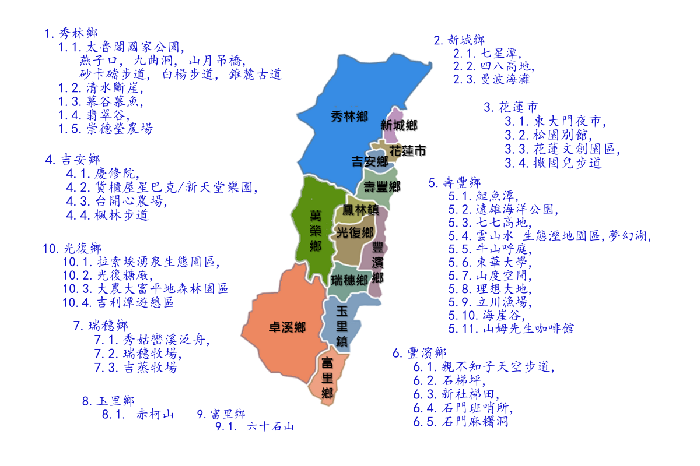
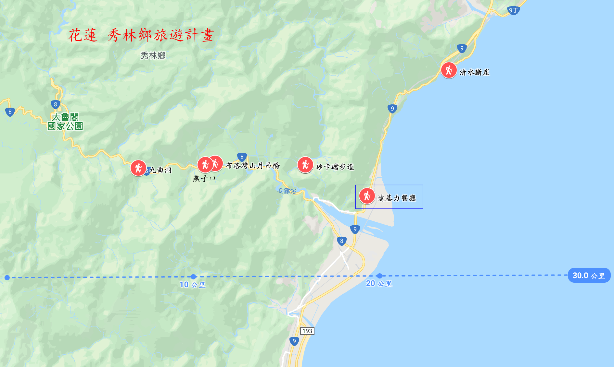
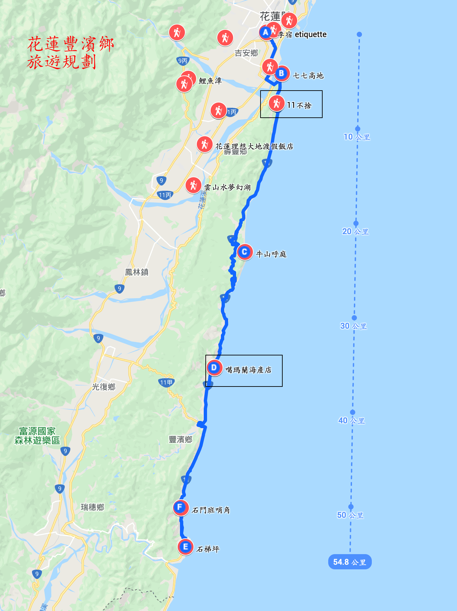
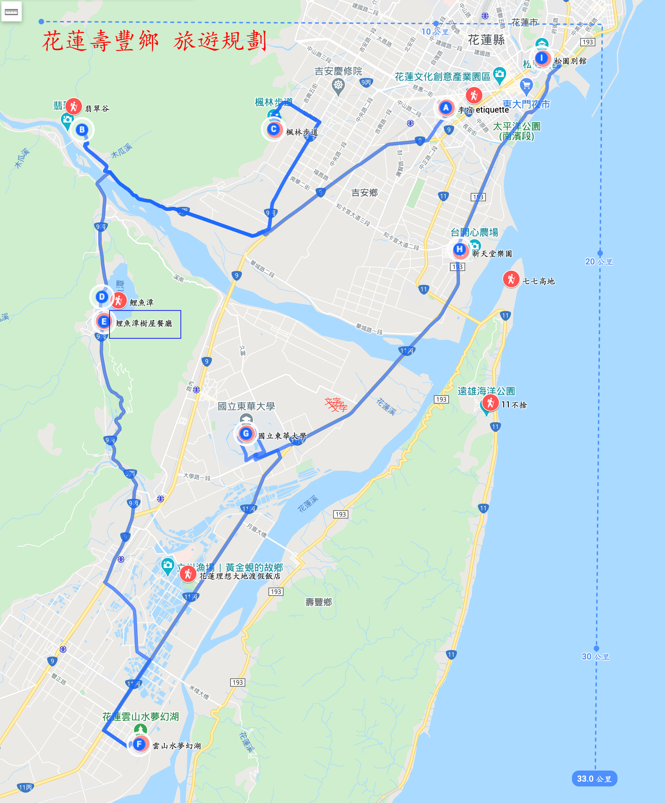

花蓮 花蓮 景點地圖  花蓮 景點匯總 {{ section }} 選擇分類 {{ post.Name }} 鄉鎮：{{post.Area}} 電話：{{post.Tel}} 地址：{{post.Address}} 開放時間：{{post.Hours}} 旅遊時間：{{post.Tour}} 門票：{{post.Charge}} 閱讀全文
花蓮 旅遊路線: 三天兩夜範例一 Day1 行程規劃 第一天行程：秀林鄉 太魯閣國家公園 台北到花蓮 自強（普悠瑪） 412 次班車 08:48 - 11:01 到達 11:00 火車站接 - 公正包子，李宿放行李 12:00 午餐 - 達基力餐廳 13:30 清水斷崖 砂卡礑步道 15:10 山月吊橋 （目前額滿） 16:30 燕子口 17:00 九曲洞 18:00 晚餐 - 闔家歡餐廳  Day2 行程規劃 第二天行程：豐濱鄉 東海岸風景 09:00 民宿出發 李宿 09:20 七七高地 11:00 牛山呼庭 12:00 午餐 - 口福餐廳 13:00 石梯坪 14:00 石門班哨所 15:00 七星潭 18:00 晚餐 - 賀松家  Day3 行程規劃 第三天行程：壽豐鄉 民宿與學校集中地區 09:00 民宿出發 09:xx 翡翠谷 10:xx 楓林步道 10:40 鯉魚潭 12:00 午餐 - 樹屋 13:30 夢幻湖 14:30 東華大學 15:20 新天堂樂園 及 貨櫃新巴克 15:40 松園別館 16:00 送達火車站 花蓮到台北班車 自強（太魯閣） 229 次班車 發車 16:30 - 19:00 
花蓮 旅遊秘境 旅遊秘境資訊： FunTime: 2020花蓮必去12大秘境，IG美照這裡拍 好好玩台灣： 花蓮景點推薦TOP10 - 遠離塵囂去花蓮，10個花蓮新玩法、超仙境打卡景點 花蓮七星潭 - 來七星潭堆石頭、看日出、踏浪